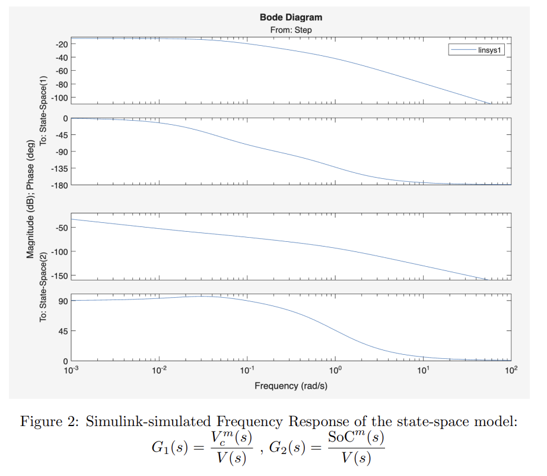
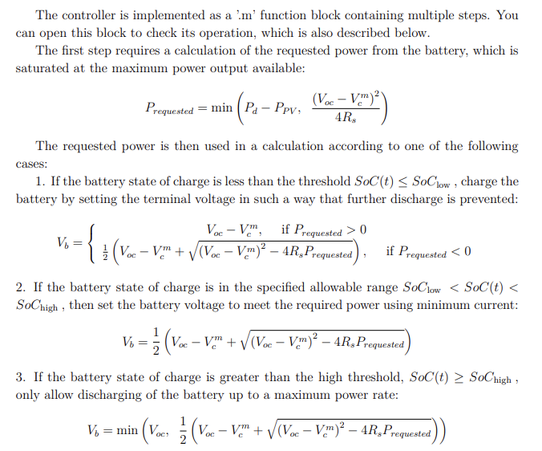
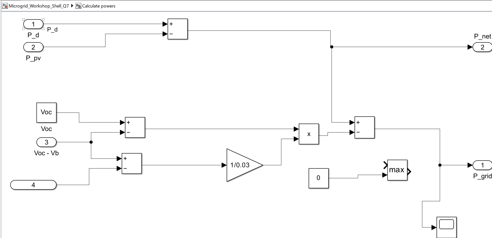
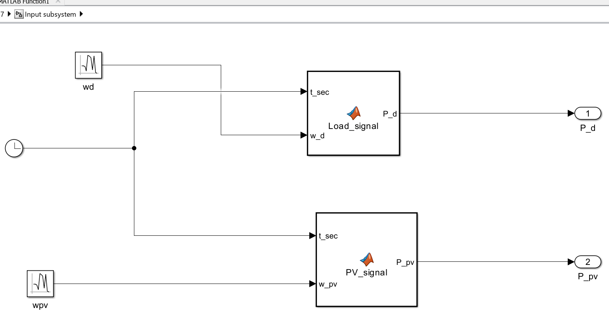

A pair of active-filter design studies: analogue low-pass, high-pass and band-stop filters derived from first-principles circuit analysis, characterised across three independent domains — analytical, simulated, and hardware-measured — and applied to remove an unknown noise tone from a real corrupted audio recording, closing with an open-ended investigation into the design’s underlying performance ceiling.


A closed-loop PV–battery–grid–load microgrid modelled end to end, from first-principles battery circuit dynamics through to dollar-denominated system economics: a hand-derived state-space battery model, driven by stochastic generation and demand profiles, dispatched by a rule-based controller, and evaluated for cost, payback, and sizing under both grid-tied and fully-islanded configurations — benchmarked throughout against real market pricing.





